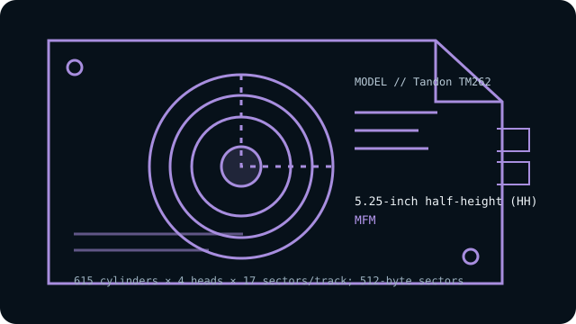

[ INDIVIDUAL COMPONENT // HARD DISK DRIVES ]
Tandon TM262
21 MB-class 5.25-inch half-height MFM drive, documented for the ST-506 interface. This entry describes the named model, not every drive with similar markings.

IDENTIFICATION: Record the complete label, suffix, revision and controller details before handling. Do not substitute a related model’s geometry or encoding based on appearance alone.
Model specifications
| Exact model | Tandon TM262 |
|---|---|
| Catalog classification | MFM and early magnetic drives |
| Capacity | Approximately 21 MB formatted |
| Form factor | 5.25-inch half-height (HH) |
| Interface | ST-506-compatible, separate 34-pin control and 20-pin data cables |
| Recording method | MFM |
| Drive geometry | 615 cylinders × 4 heads × 17 sectors/track; 512-byte sectors |
| Host-controller compatibility | Use an MFM ST-506 controller supporting the specified CHS geometry and matching drive-select, cable and termination settings. Verify the controller’s format and BIOS support before connecting; this is not IDE/ATA. |
| Historical caveat | The TM262 is the MFM model. Tandon also used related TM-series names and RLL variants; a similar number or enclosure does not establish that the controller encoding or geometry is the same. |
Host-controller compatibility
Use an MFM ST-506 controller supporting the specified CHS geometry and matching drive-select, cable and termination settings. Verify the controller’s format and BIOS support before connecting; this is not IDE/ATA.
- Confirm the full model and revision on the label, controller make/model, cable pinouts, power requirements, drive-select jumpers, and termination before connection.
- Verify that the controller supports the exact encoding, CHS geometry and sector size shown above; controller and BIOS translations can vary between systems.
- Do not attach this drive directly to modern SATA, IDE/ATA, SCSI or USB ports. Any bridge must explicitly support the legacy ST-506/ST-412 signaling and drive format; connector resemblance is not electrical compatibility.
Historical and preservation notes
OEM documentation may include related models in a shared manual. Match the complete model marking and jumper configuration before setup, and avoid transferring RLL settings from a related suffix/model.
These drives are decades old. If data matters, avoid exploratory low-level formatting, repeated power cycling or writes; preserve the original controller settings and seek qualified recovery help for a failing mechanism. Treat any catalog capacity as approximate until the original manual and host configuration are checked.
Sources & further reading
- Tandon TM362/TM262 Product Specification and User Manual (archival scan)Tandon family manual covering TM262 specifications and installation; check the exact TM262 section and revision.
- Tandon TM262 model geometry and setupModel-specific secondary reference for the 5.25-inch MFM version; OEM documentation is authoritative.
Use the model-specific documentation for the full label and revision. Third-party archival listings are useful cross-references but may summarize a family or use rounded capacity values.